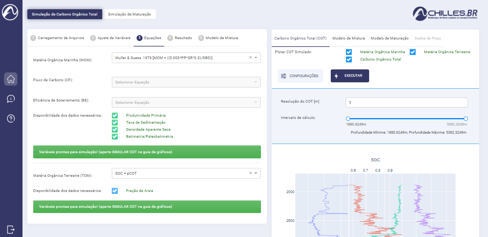
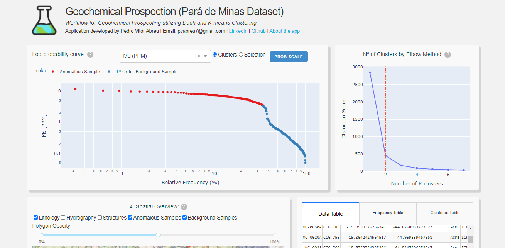
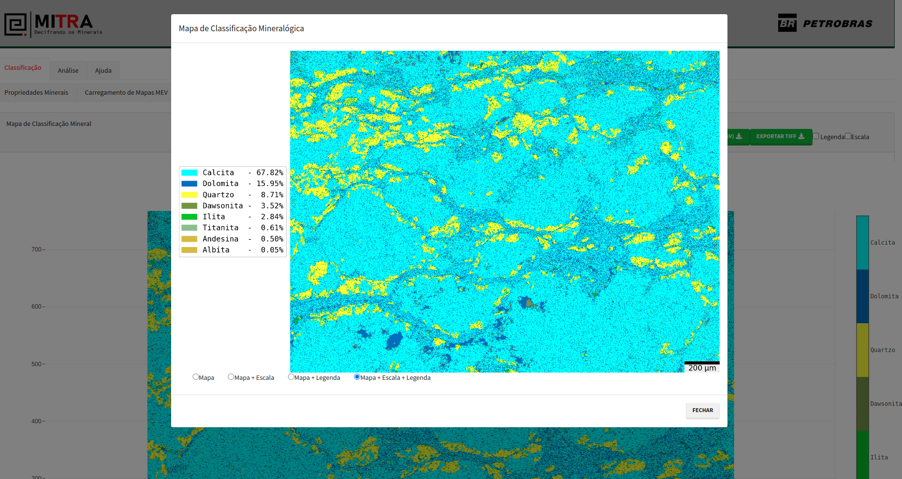
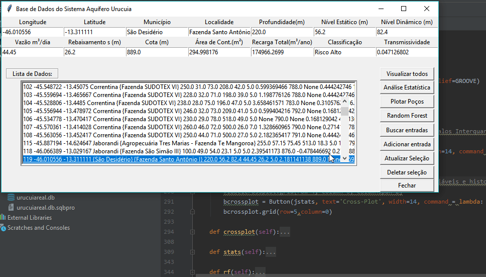
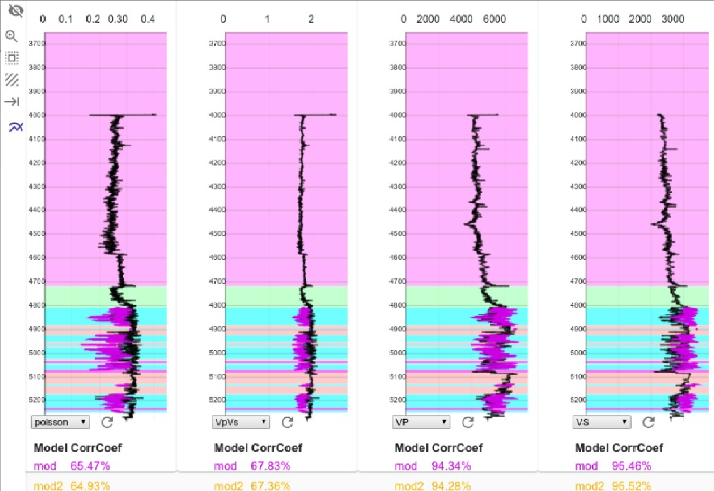
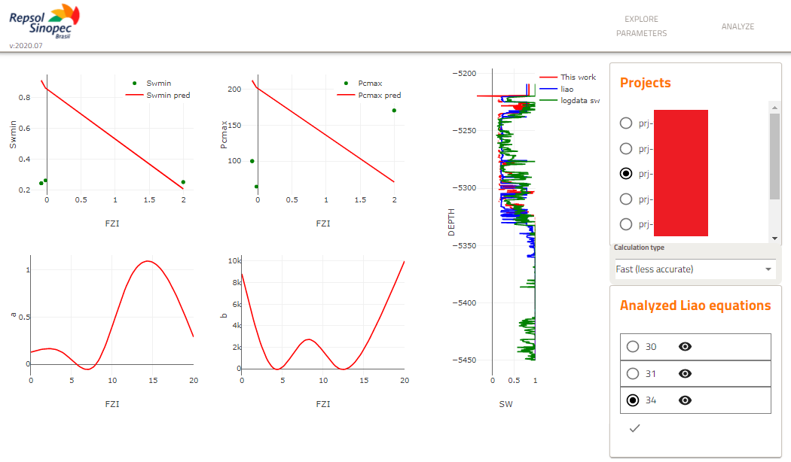

Geologist, researcher, python developer and enthusiast about tecnologic implementation for new geoscience solutions.
I like to work with many areas of Geology, but I like it most when it envolves innovation and technology.
Being in touch with the Geology and being able to help us in the better utilization of our natural resources is what inspires me. If you share this mindset, or just have good ideas, I would gladly like to work with you.
Technologies and skills:
Python:
- Flask (backend)
- Dash plotly (frontend)
- Django
- Geoprocessing
- Jupyter-notebook
- Geology-related libraries
- Machine-learning
Geology:
- Petrophysics
- Geostatistics
- Sequence Stratigraphy
- Hydrogeology
- Structural Geology
- Geoprocessing (Python, QGIS, ArcGIS)
Others:
- Git
- SQL
- Deployment with Heroku
- Docker (basic)
- Html
- Css
Recent Work

Achilles 1d is a application I've developed with LOOP
to generate 1d total organic carbon simulations based on
different esimation models. The app is capable of reading commonly used petrophysics inputs (.las, .dlis),
interpolate the data, give statistical insights and then export the outputs.
You can access it here.

I've developed an app to give support to geology students of Mineral Exploration.
It is basically an app that gives the full workflow of stream sediments geochemical prospecting.
It is capable of selecting anomalous samples manually on the graph, thus ploting on a geological map
and giving both geological and statistical insights on the dataset.
You can access it here.

Mineralogy Scan app
It's an app that generates mineralogical maps from the inputs of electron microscopy spectral data and classificates
geochemical mineralogy phases based on QEMSCAN algorithm.
This project was done with a collaborative
team of experienced engineers, geoscientists and programmers.

Urucuia Aquifer Database
My own first research and development project. I've created a database for the brazilian
aquifer Urucuia (BA). The database were focused in the caracterization of
underground water usage manipulation, based on data science tools for statistical
analysis and predictions with the machine-learning algorithm Random Forest.

Geostatistics implementation for 4D Seismic
I've coded geostatistical workflows in python with the geostatistical package
GSLIB that were then used for implementation in a 4D seismic prediction software.

Automated Water Saturation estimations
I've worked along a team of researchers and programmers to develop a innovative automated
way to estimate water saturation of oil reservoirs based on well core data and machine-learning
techniques.
Current interests
Right now I'm interested in the following topics:
- Developing more ideas.
- Open-source Structural Geology modelling.
- Creating new python geoscientific web-applications.
- Freelance opportunities.
- Learning more about quantitative geology and technologic implementation.
- Collaborating, developing and working with creative and innovative teams.
Get In Touch
Feel free to contact me:
{kind=link}
{kind=link}
{kind=link}
{kind=link}
{kind=link}
{kind=link}